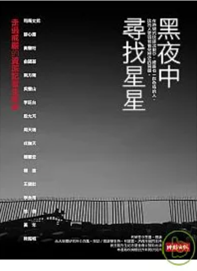

本所為了落實「從做中學」的教學理念，強調新聞實務的專業訓練，結合教學與實作，培養學生發揮創意。因此本所積極鼓勵學生參與深度採訪報導寫作計畫，從實作中深化專業技藝與知識素養，並呈現創作成果，分享給社會大眾。
近年來，本所也不斷與各相關機構合作，發展報導專書、DVD專案出版計畫。近5年來己出版相關深度報導書籍達12本以上，已形成本所的重要特色和成果。未來將持續加強採寫論文、實務專書、以及DVD等的出版計畫，以提升本所對新聞專業人才的訓練和新聞傳播實務的貢獻。在專書寫作計畫中，由本所教師帶領學生進行深度採訪與報導，培訓其新聞採寫能力，產出的作品亦對國家社會有所貢獻。
例如本所師生於2008年1月完成《黑夜中尋找星星——走過戒嚴的資深記者生命史》一書，該書係「新聞所傑出記者講座計畫」的產出之一，結合本所3位專任教師以及獲選講座的傑出記者共4人合作，帶領本所17名學生記錄17位資深記者的新聞工作經歷、感受與反省。為了使學生能順利完成這項工作，4名負責教師規劃一系列課程，培訓學生了解臺灣政治民主化、新聞自由的發展歷史，並邀請專家學者解說田野工作及深度訪談的技巧，對於專書報導對象與報導方向亦經過反覆討論而定案，經過縝密的前置作業與培訓後，才由負責教師帶領學生進行深度訪談，由學生記錄整理後經教師及受訪者校稿確認。整個出書工作歷經一年半才完成，其中的團隊合作經驗，可讓學生認識臺灣民主化的歷程與新聞自由的坎坷路，也增加學生採訪寫作的實做歷練，更是本所作為一個新聞實務導向的研究所，可以對學術界及社會展現的對臺灣歷史發展的記錄與反思。

前往博客來購買黑夜中尋找星星：走過戒嚴的資深記者生命史
內容簡介
【在時間的快速流動中，總是有一群奇特的人，比別人更容易看見歷史的容顏。】
司馬文武∕薛心鎔∕黃肇珩∕俞國基∕南方朔∕吳豐山∕李旺台∕殷允芃∕周天瑞∕戎撫天∕楊憲宏∕楊渡∕王健壯∕李永得∕徐璐∕黃年∕陳銘城
他們像是在無盡的黑夜中尋找星星，對外迎向忽明忽暗的民主亮光，對內追尋若有似無的記者典範。
二十年後，這群人當中的十七位，成為本書深入訪談的主角。他們當年寫下的所有報導與觀察，早已存放在各大圖書館提供公開查閱；他們在新聞界甚或其他領域都是響噹噹的要角，成為菜鳥記者仰之彌高的學習對象；他們新聞生涯的成功與失敗，也已到了可以接受公評檢驗的時刻。
作者簡介
何榮幸
一九六六年生，台大社會系畢業，新聞資歷十七年，現任《中國時報》政治組主任兼主筆。一九九四年起投入媒體改革運動，曾任台灣新聞記者協會第一屆會長、《目擊者》雙月刊總編輯、媒體改造學社執委。二○○五年連獲曾虛白新聞獎（新聞評論獎）、吳舜文新聞獎（深度報導獎）、卓越新聞獎（採訪報導獎），二○○六年獲聘擔任台大新聞研究所「傑出記者駐所講座」，現任台大新聞所兼任實務教師。
著有《學運世代──眾聲喧嘩的十年》、《媒體突圍──二○○五年新聞獎大滿貫的幕後故事》等書。
張錦華
一九五五年生，台大外文系學士、政大新聞所碩士、美國愛荷華大學大眾傳播學博士。現為台大新聞所教授。曾任台大新聞所所長、台大人口與性別研究中心主任、中華傳播學會理事長等。多年來熱心投入實際的媒體監督與改革活動，目前擔任台灣衛星電視公會「自律委員會」所設之「諮詢委員會」召集人。
著有《傳播批判理論》、《公共領域、多文化主義與傳播研究》、《媒體監督DIY》、《女為悅己者「瘦」？：媒介效果與主體研究》，以及翻譯《傳播符號學理論》、《女性主義傳播研究》等多本著作。研究與教學均多次獲獎。